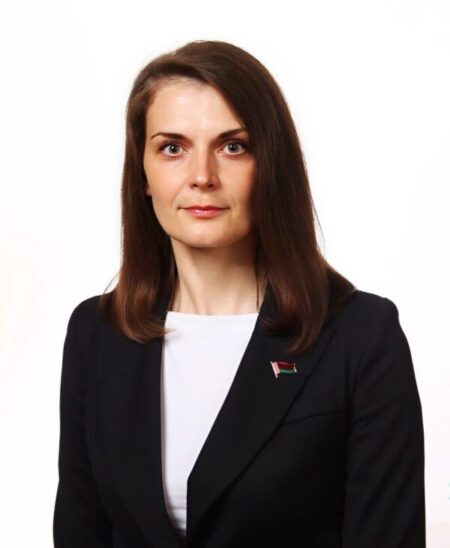

Тишкевич Марина Александровна
Главный врач
- +375 (232) 35-48-50
- ggkp14@ggkp14.by
- кабинет 401
-
режим работы 8:00 — 16:20
Рощина Валентина Владимировна
Заместитель главного врача
- +375 (232) 32 91 96
- zamglav@ggkp14.by
- кабинет 404
-
режим работы четные дни с 08:00 до 18:10
нечетные дни с 09:50 до 20:00
Гусаревич Татьяна Александровна
Заместитель главного врача по мед. экспертизе и реабилитации
- +375 (232) 33 26 51
- zamglav@ggkp14.by
- кабинет 405
-
режим работы четные дни с 09:50 до 20:00
нечетные дни с 8:00 до 18:00
вторник: с 08:00 до 12:00 — представление больных на МРЭК
среда: с 16.00 до 18.00 — выездные ВКК
Тереня Роман Николаевич
Заместитель главного врача по хозяйственной работе
- +375 (232) 50-26-47
- zavhoz@ggkp14.by
- кабинет 429
-
режим работы 8:00 — 16:30